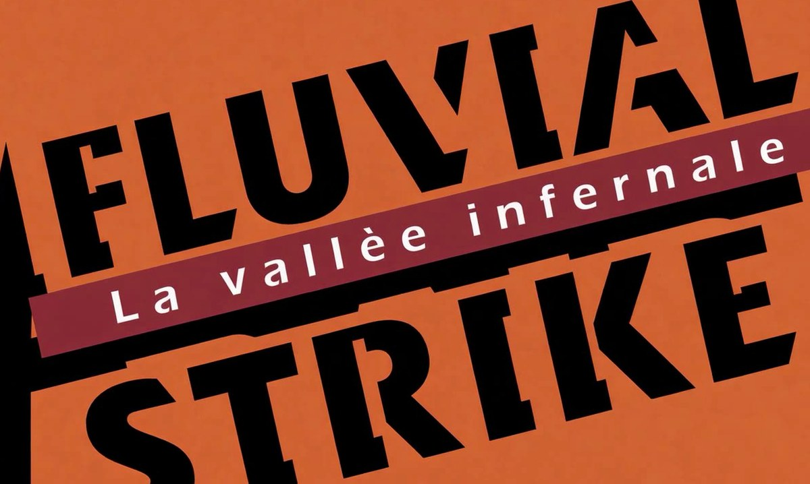

Fluvial Strike reprend le classique de l’Atari 2600 en 3D : un jet au ras de l’eau, des ponts à faire sauter et une jauge de carburant qui ne pardonne pas. Gratuit, pour Windows.
Ton jet remonte une vallée fluviale. Navires, hélicoptères et chasseurs ennemis te barrent la route, et chaque pont détruit ouvre une nouvelle section. Le carburant baisse sans arrêt : survole les dépôts pour faire le plein, ou tire dessus pour les points… à tes risques et périls. Un avion de réserve est accordé tous les 10 000 points, jusqu’à 9 en réserve.
Comme sur la cartouche : en Novice le missile suit ton avion, en Expert il part tout droit. Un classement pour chaque difficulté.
Choisis ton jet dans le Hangar : B1 StratoWing, Rafale, F-22 Raptor, Su-57 ou J-20.
À tour de rôle après chaque avion perdu, au clavier, à la manette ou en mixte.
Revois ton meilleur et ton dernier raid, en accéléré ou au ralenti.
Menus entièrement pilotables au pad, vibrations, 13 langues et une aide complète inspirée du manuel d’origine.
Réacteur et tirs réalistes, explosions et chutes dans l’eau, grand GAME OVER animé et trois musiques d’ambiance.
.pck dans le même dossier.Windows 64 bits avec une carte graphique compatible OpenGL 3.3.
| Piloter | ← → ou stick gauche |
| Accélérer / ralentir | ↑ ↓ |
| Tirer | Espace ou A |
| Pause | Échap ou Start |
| Recommencer | R |
| Couper le son | M |
Toutes les touches se modifient dans Réglages.
Fluvial Strike 1.0.1 · Windows x64 · gratuit et open source